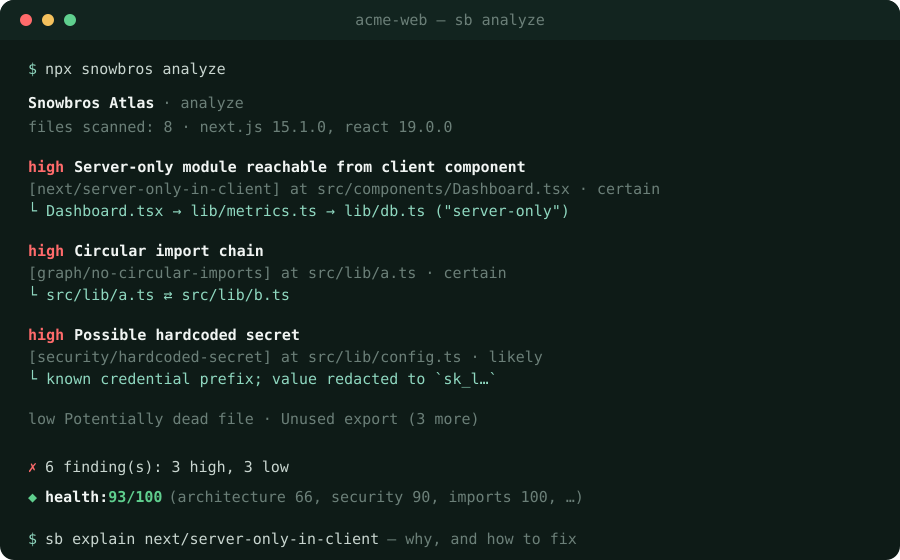
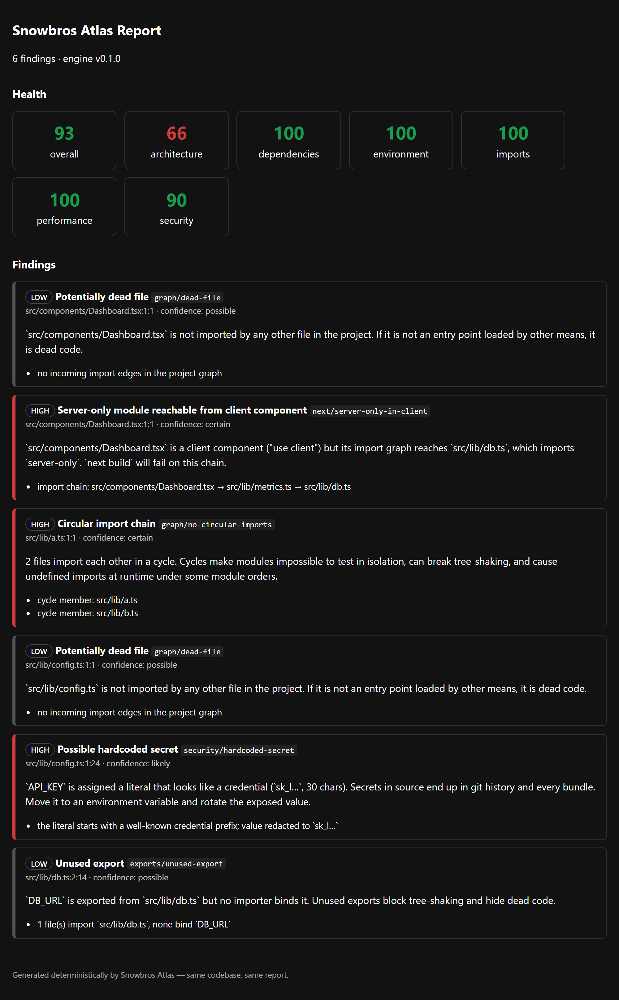

Deterministic engineering intelligence
Same code in.
Same findings out.
Every time.
Snowbros Atlas maps your whole JavaScript/TypeScript project — every import, export, env var, and framework boundary — and reports problems it can prove, with the evidence attached. Native Rust. No AI in the loop.

Why Atlas
Per-file linters can't see project structure — the import graph, the framework boundaries, the manifest. That's exactly where the expensive, long-lived bugs hide. Atlas works on that layer.
Deterministic by construction
No AI, no timestamps, no network. Warm-cache output is byte-identical to a cold run — enforced by tests.
Milliseconds, not minutes
Rust + Tree-sitter + an incremental cache: ~270 ms cold, ~34 ms after a one-file change on a 500-file repo.
Evidence, not vibes
Every finding carries the chain that produced it and a confidence level. Anything unprovable is labeled unresolved — never guessed.
Next.js boundary aware
Catches server-only
code reaching client components through aliases and re-export chains, with the full path.
Meets you everywhere
Terminal, JSON, SARIF for GitHub code scanning, self-contained HTML, a health scorecard, a built-in LSP, and a VS Code extension.
Fixes it can prove
sb fix applies guarded,
idempotent edits for unused deps and env vars. Drifted files are skipped, not clobbered.
The HTML report
sb analyze --format html writes a self-contained, shareable
report — the health scorecard plus every finding and its evidence.

How it compares
| Capability | Atlas | ESLint | Knip | dep-cruiser |
|---|---|---|---|---|
| Whole-project semantic graph | ✓ | per-file | partial | ✓ |
| Circular imports (cycle listed) | ✓ | plugin | ✗ | ✓ |
| Dead files / unused exports | ✓ | ✗ | ✓ | partial |
| Next.js server/client boundary | ✓ | partial | ✗ | ✗ |
| Deterministic, evidence-first | ✓ | mostly | mostly | mostly |
| SARIF · LSP · watch · scorecard | ✓ | LSP only | ✗ | ✗ |
| Runtime | native | Node | Node | Node |
Not a linter replacement — run Atlas alongside ESLint or Biome. Its territory is project structure, not style.
Install
Any one of these — all work today. No global install needed to try it.
# npm (recommended for JS/TS teams) npx snowbros analyze npm install -g @snowbros/atlas # Homebrew (macOS, Linux) brew install snowbros-labs/tap/snowbros-atlas # Cargo cargo install snowbros-atlas --locked # Shell (macOS, Linux) curl --proto '=https' --tlsv1.2 -LsSf \ https://github.com/snowbros-labs/atlas/releases/latest/download/snowbros-atlas-installer.sh | sh